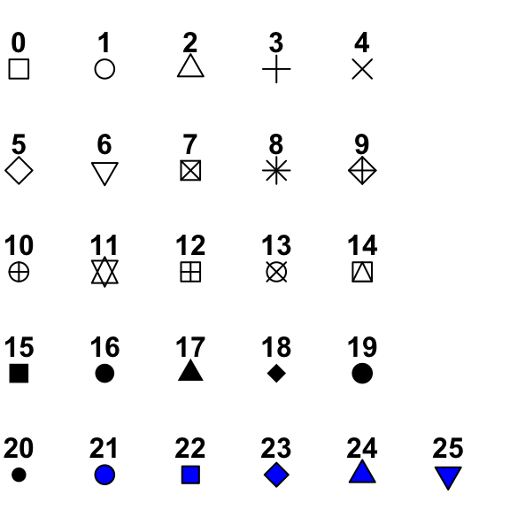
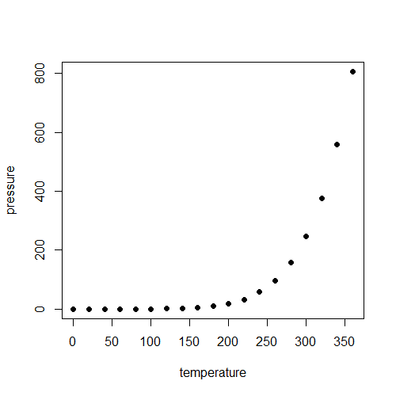
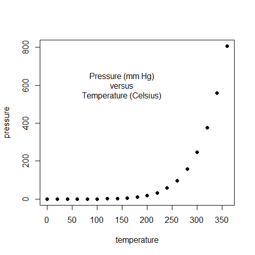
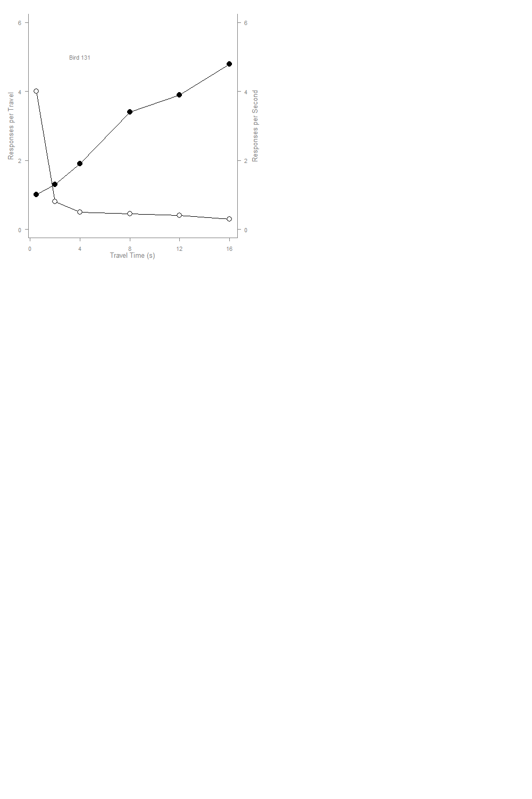
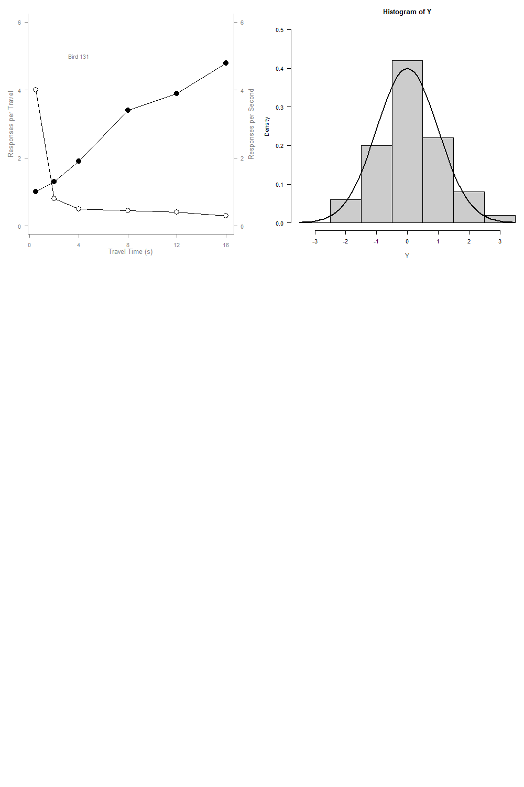
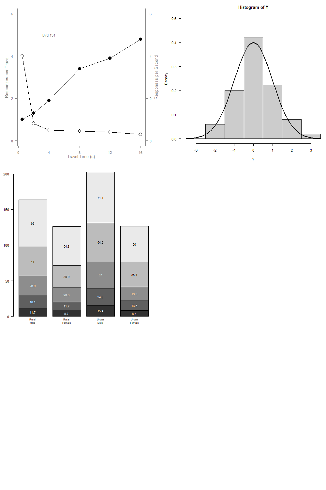
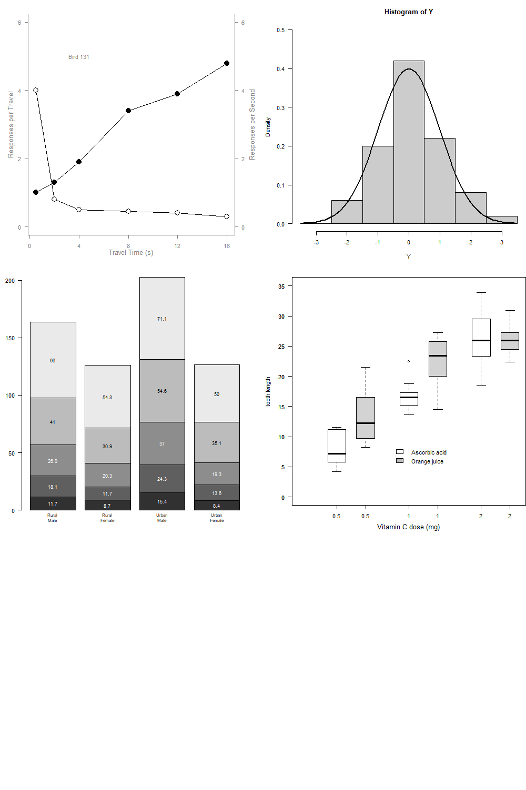
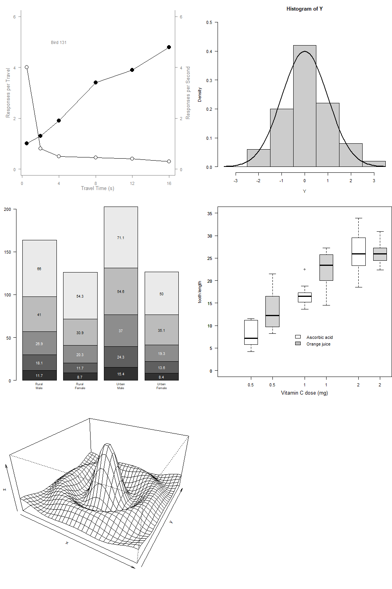
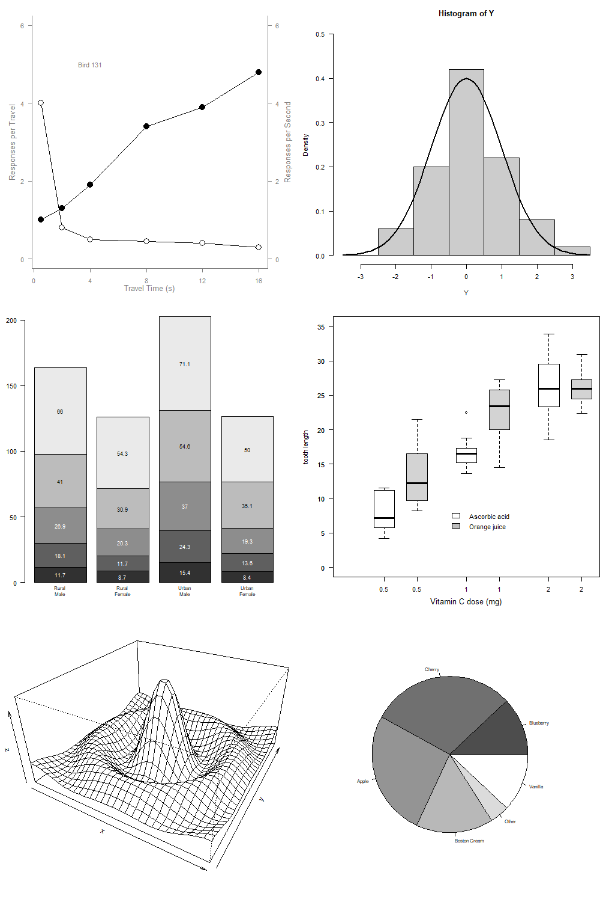

Assignment 2
The first function is the plot() command, which take a data set, in this case is the pressure data set that comes within r, and plots the pressure against temperature. The option pch is an option which changes how the points are represented on the graph. Here is a chart that shows what the different pch options look like, and in this graph we use option 16. 
Here is the resulting graph: 
The next line of code, using the text() command, which adds in text into an existing plot. In this case, we are just adding a description of the graph. 
The next line of code, using the par() command just separates the graphical environment into subsections. For this case, we are using the option mfrow = c(3,2), which creates 3 rows and 2 columns of subspace for the graphs, or 6 total sub-graph environments.
After defining out some variables we use the par() command again to define some more parameters for our subgraph environment. The las option changes the orientation of the axis label, in our case, 1 moves it to be horizontal to the axis. The mar option changes the margins for the plot. Finally the cex option re-scales the things being plotted, our case decreases the size by 30%. Finally to create a new plot in our sub-graph environment, we use the plot.new() command.
After we create the new plot environment, we can define out the ranges of the plot using the plot.window() command which we feed a x and y range to set at the axis for our plot. After this, we finally create our graph using the line() command, which just draws a line between points, in this case we do it with x and y1 and y2, which we defined earlier. Then we use the points() command to actually plot the points onto the graph, using the pch option to change the type of point, and the bg option to change the color of the points. After we have the main information of the plot, we need to add the rest of the information so it can actually be interpreted. The axis() command creates an axis for a plot, and it requires a side number, the first number in the command, which specifies the side that the axis will be applied to. Finally the at option puts the tic marks on the axis, which uses the seq() command to do it from the first number, to the second number, at the interval of the third number. The box() command adds a box to the graph, and the option bty specifies a box with the top open. Finally we can use the mtext() and text() commands from earlier to add in text to the plot, and in total it looks like this: 
From here we are going to create a graph right next to our previously created graph. After defining out some variable parameters, we can use the hist() command to create a histogram of y. The first option is our data, the breaks option is what determines which data points go into which categories, in this case it will be from -3.5, our lowest value, to 3.5, our highest value, with each break spanning 1 unit. The ylim option sets the range for y axis. Finally the feq option, when set to FALSE, displays the data as a percentage of total data, whereas when set to TRUE, it displays the counts of the data points. After this we use the lines() command to draw a normal distribution over our histogram. This is what our histogram looks like: 
The next graph is a bar plot, which we can use the barplot() command to draw. We use the VADeaths data set, which is the death rates per 1000 in Virginia in 1940. We can change the color of the bar plots for the different age groups by using the col option combined with the gray() command and the seq() to sequentially vary the gray. Adding in the text using the mtext and text command we can add in the numbers for the sizes of each subsection of the bar, and display which data that each bar represents. This is what the updated graph looks like: 
The next plot that we will create is the box plot, using the boxplot() command, which shows the median, interquartile range, min/maxes, and outliers. For this we will use the Toothgrowth data set. For the box plot itself we have to define a regression, and in this case, we define our regression as length ~ dose. We also use the subset option to add the Ascorbic Acid and Orange Juice regressions separately so that we can change the color of the boxes so that they stand out from each other. The legend() command allows us to define a legend in the plot space and the fill option gives up the ability to specify the colors for our legend. 
The next plot is a perspective plot, which is used to plot 3 dimensional graphs. After defining out our x,y,z, we can use the persp() command to plot it. The theta and phi options are used to rotate the graph into different viewing angles, in this case we chose 30 degrees for both of them. 
Finally, the last plot to add into our series is the pie chart, which we can use the pie() command to draw it. Since the pie graph isn’t done in a plot environment, we need to edit our par() command with the xpd = FALSE option so that we can add a figure into the plot sub-environment. The pie command takes our data set defined in the line above, and creates slices of the data representative of the percentage of the total. We also can define the colors of each slice by using the col option. 
Note that each of these graphs were put into the sub-environments that we defined earlier when we used the first par() command with the mfrow option. If we wanted any of these graph on its own, we can just run the code for the graph, but we have to make sure that the code is not trying to push it into a sub environment. If the graphs are no longer necessary, we can use the dev.off() command to remove all the existing graphs.